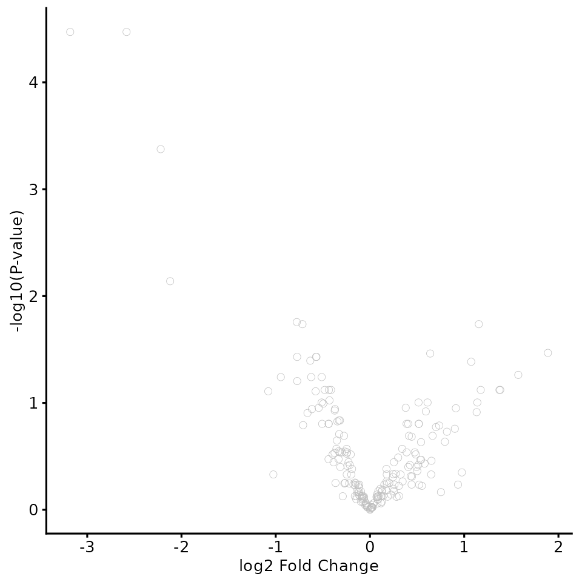

Getting started: which workflow do I need?
Tom Smith
2026-09-11
Source:vignettes/biomasslmb.Rmd
biomasslmb.Rmdbiomasslmb covers the path from search engine output to
a list of differentially abundant proteins. This article is a map of
that path: it explains what the other vignettes assume, which of them
applies to your experiment, and which decisions along the way are worth
thinking about rather than accepting a default. Apart from the worked
example immediately below, it contains little analysis itself — each
stage links to the vignette that works through it in full.
Please ask
These vignettes are a guide, not a specification, and they describe the common cases. They are written to make the routine parts of an analysis straightforward and to make the decisions in them visible, so that you can tell which choices your result depends on. They cannot anticipate every detail of your experiment.
If any part of your analysis is unclear, or your design is not one of the ones covered here, please get in touch with Tom Smith (tsmith@mrclmb.ac.uk) rather than guessing. That applies to reading these articles as much as to running the code — if a step does not make sense, or a result looks wrong, or you are unsure which route applies, an email is quicker than working it out alone and it is never an imposition. It is far easier to help while an analysis is in progress than to unpick a decision afterwards, and easier still before the samples are run.
How these vignettes are organised
The articles fall into five groups, which are the headings in the sidebar. Knowing which group an article belongs to tells you what to expect from it.
Start here is this article and working with QFeatures objects, which covers the object every analysis is built in and the design table it needs.
Core workflow is the sequence almost every experiment goes through: annotation, then the QC and summarisation vignette for your acquisition type, then testing, then functional enrichment. Each of these presents one route, worked end to end on real data, and states the choice it is making at each step rather than listing the alternatives.
Specialised designs covers experiments that need something different from the same protein-level matrix — enrichment experiments, PTM experiments, and comparing abundances between different proteins rather than between samples. Read the core workflow article for your acquisition type first; these pick up where it leaves off.
Choosing between options is for when a decision in the core workflow matters enough to your experiment that a default is not good enough. These articles compare two or more ways of doing the same thing on the same data, and report what each one costs. They are reference material rather than a route to follow: read one when you reach the decision it covers, or when a result depends on it.
Cautionary tales are short articles about steps that look the same whether or not they are working. Each takes one such step, shows what a result looks like when the step has gone wrong, and gives the check that would have caught it. They are worth reading before you trust a result rather than after.
The shape of an analysis
Before the detail, here is a complete analysis: a label-free whole-proteome comparison between a wild type cell line and a point mutant, three replicates each, from the search engine’s peptide table to a list of differentially abundant proteins. Every step is explained properly elsewhere; the point of showing it in one piece is that the whole thing is about forty lines, and the vignettes that follow are expansions of these steps rather than additions to them.
Read the data and attach the design. (Working with QFeatures objects)
pep_inf <- system.file("extdata", "lfq_dda_pd_PeptideGroups.txt",
package = "biomasslmb")
infdf <- read.delim(pep_inf)
abundance_cols <- grep('^Abundance', colnames(infdf))
design <- data.frame(
quantCols = colnames(infdf)[abundance_cols],
Condition = rep(c('WT', 'Mutant'), each = 3),
Replicate = rep(1:3, times = 2))
qf <- readQFeatures(assayData = infdf, quantCols = abundance_cols,
colData = design, name = 'peptides')
qf <- sync_coldata(qf)Remove contaminants and low-confidence identifications. (LFQ-DDA workflow, contaminants and protein FDR)
contaminants <- get_contaminant_fasta_accessions(system.file(
"extdata", "0602_Universal_Contaminants.fasta.gz", package = "biomasslmb"))
qf[['filtered']] <- filter_features_pd_dda(
qf[['peptides']], contaminant_proteins = contaminants,
filter_contaminant = TRUE, filter_associated_contaminant = TRUE,
remove_no_quant = TRUE)Log-transform, normalise, and summarise peptides to proteins. (choosing a summarisation method, handling missing values)
qf[['normalised']] <- normalize(logTransform(qf[['filtered']], base = 2),
method = 'diff.median')
qf[['for_summarisation']] <- filter_features_per_protein(
filterNA(qf[['normalised']], pNA = 4/6), min_features = 2)
qf <- aggregateFeatures(qf, i = 'for_summarisation',
fcol = 'Master.Protein.Accessions', name = 'protein',
fun = MsCoreUtils::robustSummary)
qf <- sync_coldata(qf)Keep the proteins that can be tested, and test them. (data exploration and statistical testing)
condition <- factor(qf[['protein']]$Condition, levels = c('WT', 'Mutant'))
quant <- assay(qf[['protein']])
n_quant <- sapply(levels(condition), function(g){
rowSums(!is.na(quant[, condition == g, drop = FALSE]))
})
testable <- apply(n_quant, 1, min) >= 2
fit <- eBayes(lmFit(quant[testable, ], model.matrix(~ condition)))
results <- topTable(fit, coef = 2, number = Inf)
c(peptides = nrow(qf[['peptides']]),
after_filtering = nrow(qf[['filtered']]),
proteins = nrow(qf[['protein']]),
testable = sum(testable),
significant = sum(results$adj.P.Val < 0.05))
#> peptides after_filtering proteins testable significant
#> 3544 2182 206 201 14
plot_volcano(results) + theme_biomasslmb(base_size = 10)
Every line above glosses over a decision — which contaminant list, how much missingness to tolerate, whether to normalise at all, what makes a protein testable — and the rest of this article is about which of those decisions matter for your experiment. But the skeleton is the one every vignette here follows.
The object you work in
The qf object above is a QFeatures object,
and every vignette here works in one. Each processing step adds a
new assay rather than overwriting the previous one, and assay
links record which features contributed to which. A finished object
therefore holds the whole history of the analysis, from the raw features
to the protein-level quantification, and you can always step back to ask
where a protein-level value came from. Working with QFeatures objects covers
the object and the design table it needs, and is worth reading before
your first analysis.
Example data
The package ships processed QFeatures objects for each
acquisition type, each produced by the corresponding vignette, so you
can experiment with a realistic object without running the QC first.
library(QFeatures)
library(biomasslmb)
tmt_qf <- biomasslmb::tmt_qf
lfq_qf <- biomasslmb::lfq_qf
dia_qf <- biomasslmb::dia_qfThe assay names record the processing each one has been through:
lapply(list(tmt_qf = tmt_qf, lfq_qf = lfq_qf, dia_qf = dia_qf), names)
#> $tmt_qf
#> [1] "psms_raw" "psms_filtered" "psms_filtered_norm"
#> [4] "psms_filtered_sn" "psms_filtered_rank" "psms_filtered_missing"
#> [7] "psms_filtered_forSum" "protein"
#>
#> $lfq_qf
#> [1] "peptides_raw" "peptides_filtered"
#> [3] "peptides_filtered_norm" "peptides_filtered_missing"
#> [5] "peptides_for_summarisation" "protein"
#>
#> $dia_qf
#> [1] "precursors" "peptides_filtered"
#> [3] "peptides_filtered_norm" "peptides_filtered_missing"
#> [5] "peptides_for_summarisation" "protein"A QFeatures object also carries the experimental design
in its colData, which is what the exploration and testing
functions use:
tmt_qf
#> An instance of class QFeatures (type: bulk) with 8 sets:
#>
#> [1] psms_raw: SummarizedExperiment with 11281 rows and 12 columns
#> [2] psms_filtered: SummarizedExperiment with 6312 rows and 12 columns
#> [3] psms_filtered_norm: SummarizedExperiment with 6312 rows and 12 columns
#> ...
#> [6] psms_filtered_missing: SummarizedExperiment with 4987 rows and 12 columns
#> [7] psms_filtered_forSum: SummarizedExperiment with 4853 rows and 12 columns
#> [8] protein: SummarizedExperiment with 402 rows and 12 columnsTo start from raw search engine output instead, the corresponding
input files are in extdata:
dir(system.file("extdata", package = "biomasslmb"))
#> [1] "0602_Universal_Contaminants.fasta.gz"
#> [2] "C_vibrioides_proteome.fasta.gz"
#> [3] "contaminants.fasta.gz"
#> [4] "cRAP_20190401.fasta.gz"
#> [5] "go_enrichment_cache.rds"
#> [6] "lfq_dda_ibaq_PeptideGroups.txt.gz"
#> [7] "lfq_dda_ibaq_proteome.fasta.gz"
#> [8] "lfq_dda_mq_peptides.txt.gz"
#> [9] "lfq_dda_pd_PeptideGroups.txt"
#> [10] "lfq_dda_pd_Proteins.txt.gz"
#> [11] "lfq_dda_pd_turboid_PeptideGroups.txt"
#> [12] "lfq_dda_techrep_peptides.txt.gz"
#> [13] "missingness_survey.rds"
#> [14] "monkeypox_metadata.xlsx"
#> [15] "monkeypox_plasma_proteomes.parquet"
#> [16] "peptide_uniqueness.rds"
#> [17] "protein_annotation_cache.rds"
#> [18] "spectronaut_report.tsv.gz"
#> [19] "tmt_2plex_PeptideGroups.txt.gz"
#> [20] "tmt_pd_PSMs.tsv"
#> [21] "tmt_phospho_proteome.fasta.gz"tmt_qf_mq and tmt_qf_factorial are the same
TMT pipeline run from MaxQuant rather than Proteome Discoverer output,
and psm_tmt_clock, psm_tmt_per2_mq,
psm_tmt_2plex, psm_tmt_factorial and their
design tables provide PSM-level starting points with accompanying
experimental designs. Two of them carry a design the others do not:
psm_tmt_2plex spans two TMT plexes, each with a pooled
bridge channel, and psm_tmt_factorial crosses two
experimental factors rather than comparing two groups.
What the package assumes
You have search engine output, not raw spectra. The starting point is a PSM, peptide or precursor level table from Proteome Discoverer, MaxQuant, Spectronaut or DIA-NN. Everything upstream of that — the search itself, FDR control at the spectrum level, the choice of sequence database — happens elsewhere.
The destination is protein-level quantification and statistical testing. Peptide- and site-level analyses are possible and are covered separately, but the default path summarises to protein level before testing.
How to read the code in these vignettes
To clarify which functionality is provided by which package, the
vignettes write calls as package::function. For your own
code, there is no need to specify the package unless you want to
maintain this clarity.
Because each step adds an assay rather than replacing one, the
vignettes accumulate assays with names like
psms_filtered_sn and
peptides_for_summarisation rather than reassigning a single
matrix.
Which material to refer to?
Which vignette you need depends on two independent things: how the data were acquired, and what kind of experiment it was.
Acquisition type determines the QC and filtering you need, because the artefacts differ. It selects one of three vignettes:
| Acquisition | Input | Vignette |
|---|---|---|
| TMT | PSM-level (PD or MaxQuant) | TMT PSM QC and summarisation |
| LFQ-DDA | Peptide groups (PD or MaxQuant) | LFQ-DDA peptide QC and summarisation |
| LFQ-DIA | Precursors (DIA-NN or Spectronaut) | LFQ-DIA precursor QC and summarisation |
Each of those works through one straightforward experiment end to end, on Proteome Discoverer or DIA-NN output. The other search engines reach the same point by a different reading step, covered at the end of the relevant vignette: MaxQuant for TMT, MaxQuant for LFQ-DDA and Spectronaut for LFQ-DIA. A TMT design too large for a single plex needs the extra step covered in multi-plex TMT.
Experimental design determines how the resulting quantification should be normalised and tested. A whole-proteome comparison, an enrichment experiment (IP, BioID, TurboID) and a PTM experiment ask different things of the same protein-level matrix:
- Whole proteome. Most proteins are unchanged between conditions, missing values usually mean the protein was present but not detected, and a two-sided test against the other condition is what you want. The data exploration and statistical testing vignette works through this case.
- Enrichment. Most of the quantified proteome may be bait-dependent, so the assumption that underpins median normalisation fails. In a label-free pulldown, absence from the control is frequently real absence rather than failed detection, which changes both what imputation means and which proteins are testable at all; in a single-plex TMT pulldown it largely does not arise, since every channel is quantified from the same spectrum. Testing is often one-sided. Enrichment designs works through both cases, the label-free one through to a tested list of interactors.
- PTM. Site-level changes are confounded with changes in the abundance of the underlying protein, so the enriched data need normalising against a matched measurement of the total proteome before the site-level result means anything. See PTM site quantification.
The two axes are independent: a TMT IP and an LFQ-DIA whole-proteome comparison use different QC vignettes and different statistical treatments, and each combination occurs in practice.
All three of those designs ask the same underlying question — which proteins, or sites, differ in abundance between conditions — and that is the question every vignette here works through to a result. Many experiments ask something else of the same measurements: how abundance changes over time, how it responds to a dose or a temperature, how quickly a protein is made or destroyed. The stages below are not specific to differential abundance, and everything up to and including protein-level quantification applies unchanged to those designs: the annotation, the QC and filtering, the summarisation, the normalisation, and the reasoning about missing values are all the same work. What differs is the model fitted at the end. If your experiment is one of those, read the vignette for your acquisition type for stages 1 and 2, and treat the testing stage as the point where this material stops applying.
Both axes concern comparing the same protein between samples, which is what the quantification supports well. Comparing different proteins with each other — asking which of two proteins is present in greater amount — is a separate question, and the intensities do not answer it directly, because a peptide’s signal depends at least as much on how readily it ionises as on how much of it there is. Absolute quantification and iBAQ covers the correction usually applied and what it does and does not achieve.
The stages, in order
These vignettes follow the same sequence regardless of which combination above applies.
1. Protein annotation. Retrieve UniProt annotations
for the accessions in your data before anything else, and cache them, so
that every later step can use gene names, protein descriptions and GO
terms. get_uniprot_details() retrieves the annotations,
collapse_uniprot_details_multi_accession() handles protein
groups with several accessions, and
get_go_terms(expand_terms = TRUE) retrieves GO terms with
ancestor terms included. Retired accessions that no longer resolve are
recovered with get_uniparc_fallback(). See protein annotation.
2. QC, filtering and summarisation. Remove contaminants and low-confidence identifications, log-transform, normalise, and summarise features to protein-level abundance. This is the acquisition-specific stage — use the vignette from the table above.
3. Exploration and statistical testing. Check that
the experiment worked before testing it: look at sample correlations and
plot_pca(), and at the protein(s) the experiment turns on —
a bait, a knockout, a treatment target — with
plot_protein_assays(), which shows a protein across the
processing steps so that a result can be traced back to the features
behind it. Then apply a testability filter and test. The filter these
vignettes use requires at least two genuinely quantified replicates in
at least one condition, and at least two values in both conditions of
whichever assay is actually fitted — one rule when nothing is imputed,
two when something is. An enrichment design needs a different rule,
covered in enrichment designs.
See data exploration
and statistical testing.
4. Functional enrichment. Test whether the
differentially abundant proteins are enriched for particular GO terms,
against the proteins that were tested rather than against the proteome.
get_enriched_go() runs the test, correcting for the
tendency of abundant proteins to be called significant more often via a
goseq probability weighting function; estimate_overrep()
adds an effect size, remove_redundant_go() collapses the
parent and child terms that otherwise dominate the output, and
plot_go() displays it. See functional enrichment, and ORA or GSEA? for the threshold-free
alternative.
The decisions worth thinking about
Every analysis makes choices about summarisation, missing values, testing and normalisation. They are not independent of each other, and there is no single set of correct answers, so it is worth understanding what each one assumes.
Summarisation, missing values and testing are one decision
The obvious reading is that you pick a summarisation method, then decide what to do about missing values, then choose a test. Some of the available approaches do work that way. Others do not, because they treat the missingness as something to be modelled during the test rather than resolved before it:
-
Separate steps. Summarise with
robustSummaryor by summing, decide on imputation at the protein level, then test withlimma. Each step is independent and inspectable.limmafits a linear model per protein, but it fits it to whatever values survive the earlier steps, and knows nothing about why the rest are absent. - limpa couples all three. It takes peptide-level data, fits a detection probability curve relating detectability to abundance, produces protein-level estimates with standard errors, and carries that uncertainty into the linear model. It replaces summarisation, imputation and the model fit together.
-
missBayes couples the last two. It takes unimputed
protein-level quantification and models the missingness explicitly as
part of the test. Note that it fits every protein, so a result can
concern a protein that a
limmaanalysis would never have tested at all.
Because a QFeatures object holds parallel assays, these
are not mutually exclusive: you can summarise with
robustSummary and with limpa into the same object and
compare the outcomes.
The recommended starting point depends on acquisition type
Missingness differs by acquisition type, and since summarisation choices are largely a response to missingness, so does the recommendation:
| Summarisation | Missing values | Testing | |
|---|---|---|---|
| TMT | sum PSMs (base::colSums) |
little within a plex; between plexes handled by bridge correction | limma |
| LFQ-DDA | robustSummary |
the live decision |
limma, or missingness-aware (limpa, missBayes) |
| LFQ-DIA | robustSummary |
live, though less severe than DDA |
limma, or missingness-aware (limpa, missBayes) |
Within a TMT plex, all samples are quantified in the same MS run, so after signal-to-noise filtering the data are close to complete, and reporter ion intensities are additive across the PSMs of a protein. Summing them is both simpler and better justified than a robust method designed to tolerate missing values. TMT’s missing value problem appears between plexes, and bridge or pooled reference channels address it directly.
LFQ quantifies each sample in a separate run, so missing values are
pervasive and are related to abundance. robustSummary and
limpa’s detection probability curve are both responses to that problem.
Applying them to within-plex TMT data addresses a problem that is not
there. The summarisation
methods vignette compares sum and
robustSummary directly, on the same data.
Three things should make you depart from the recommended route:
-
Severity of missingness. Diagnose it rather than
assuming:
global_condition_miss_score()separates missingness explained by abundance from missingness explained by condition,condition_miss_score()does the same per feature, andplot_missing_upset()andplot_missing_SN()show its structure. Handling missing values works through the diagnosis and every option that follows from it. - Experimental design. In an enrichment experiment, absence from the control is usually real rather than a detection failure. Discarding those features removes your strongest candidates outright; imputing them keeps the candidates but restates a presence/absence result as a fold change against an invented background, so its magnitude is set by the imputation parameters rather than by the data.
-
Downstream statistical test.
limmatests contrasts between groups. It does not estimate a decay rate, a melting temperature, or an amplitude and phase, so it is the wrong tool for a degradation or turnover timecourse, thermal proteome profiling, a dose response, or a circadian experiment — these call for the package built for the question,nlsfor kinetics, a cosinor model or MetaCycle for rhythms, and so on, fitted directly to the protein-level quantification matrix. What the missingness-aware routes offer such a design differs between them. missBayes returns a posterior per protein rather than a quantification matrix, so it does not feed them at all. limpa does return a protein-by-sample matrix, and a complete one, but its completeness comes from values estimated by the detection probability curve, and the per-observation standard errors that justify the method sit beside the matrix rather than in it. A tool that takes a bare matrix therefore fits partly to model output while discarding the uncertainty that came with it.
Normalisation: what do you assume is unchanged?
The normalisations used in these vignettes all work the same way: they take some set of proteins to be unchanged between samples, and remove whatever difference is observed in that set. They differ only in how explicit they are about which set that is.
-
Reference set.
get_medians()andcenter_normalise_to_ref()normalise to a subset you define: the total proteome for a phospho experiment, a spike-in, or a set of proteins independent of the bait in an enrichment experiment. The assumption is explicit, and you can check whether it holds. The PTM site quantification vignette works through the phospho case. - Bridge or pooled channel. For multi-plex TMT, the reference is a channel present in every plex rather than a set of proteins. This is what removes plex effects, and the multi-plex TMT vignette works through it.
-
All proteins.
diff.mediannormalisation assumes most proteins are unchanged. For a whole-proteome comparison between similar conditions this is reasonable. For an enrichment experiment or a strong perturbation it can be badly wrong, and it fails silently.
Not every normalisation is of this form. Quantile normalisation, for
instance, nominates no set at all: it replaces each sample’s ranked
abundances with the average across samples at that rank, so every sample
ends up with an identical distribution. The assumption is
correspondingly stronger — that the true distribution of abundances is
the same in every sample, and any difference in its shape is technical —
and where that fails it fails as quietly as diff.median
does.
Where to go next
If you are starting an analysis, go to the vignette for your acquisition type and work forwards, then on to data exploration and statistical testing and functional enrichment.
The testing stage itself is covered in two places, because an enrichment design asks for different choices from a whole-proteome one. Data exploration and statistical testing works through a whole-proteome comparison, a single-plex TMT pulldown and a design with two crossed factors, testing all three in the conventional two-sided way. Part B of enrichment designs works through a label-free pulldown with the treatment that design calls for: a testability rule that keeps the proteins absent from the control, imputation restricted to where absence is defensible, and a one-sided test.
If you are trying to decide between two ways of doing something, the summarisation methods vignette compares summarisation approaches directly, handling missing values sets out the options at each stage and what each one costs, and comparing processing pipelines asks how much of a result depends on the software that produced it.
Three articles cover steps that look the same whether or not they are working, which is what makes them worth reading before you trust a result rather than after:
- Peptides are not proteins — the inference step between what the instrument measured and what the output file reports, and which proteins it is unreliable for.
-
Contaminants and protein
FDR — three overlapping defences against contaminants, which of them
is actually doing the work, and what
filter_by_protein_fdr()removes besides low-confidence proteins. - Technical replicates are not biological replicates — what happens to a result when repeat acquisitions of one sample are tested as though they were independent samples.
Getting help
As above: if you are unsure which route applies to your data, or you have a design the vignettes do not cover, please get in touch with Tom Smith (tsmith@mrclmb.ac.uk) rather than guessing.
This applies in particular to the designs that end in a model other than a comparison between conditions: thermal proteome profiling, protein degradation and turnover measured by pulse labelling, circadian and other timecourse experiments, dose responses, and clustering of temporal profiles. The quantification these need is produced by the vignettes here, but the analysis that follows is specific enough to each experiment that it is worth discussing directly rather than adapting the testing vignettes to it. Please get in touch, ideally before the samples are run, since these designs constrain the number of conditions, the labelling scheme and the choice of acquisition in ways that are impossible to fix afterwards.